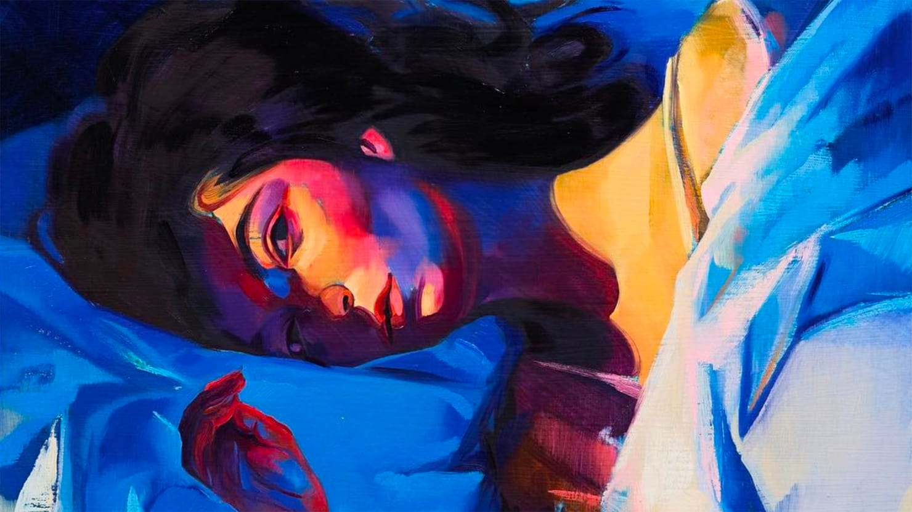
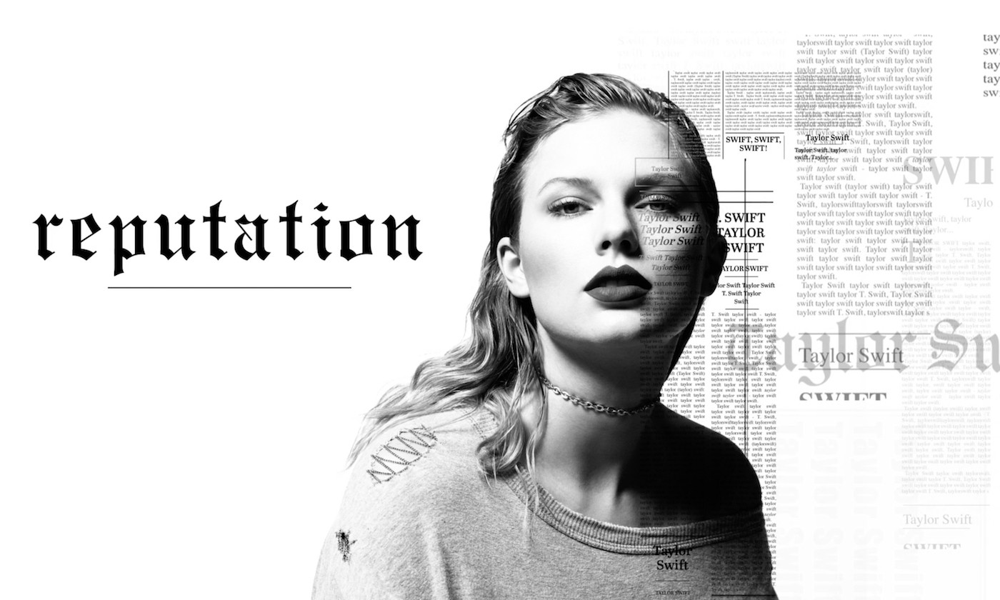
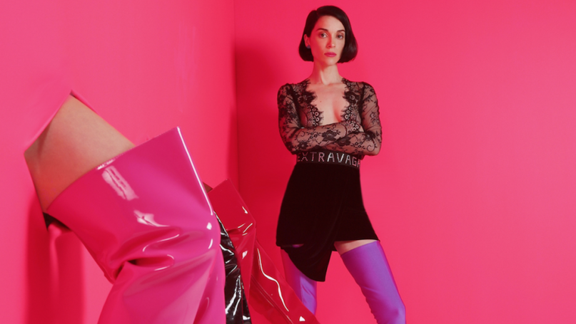
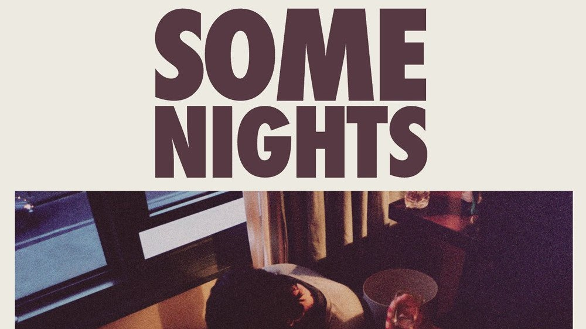
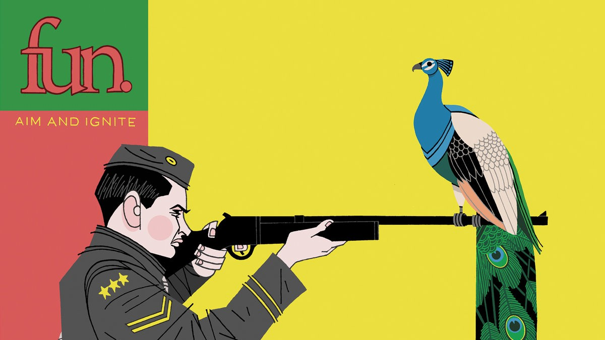
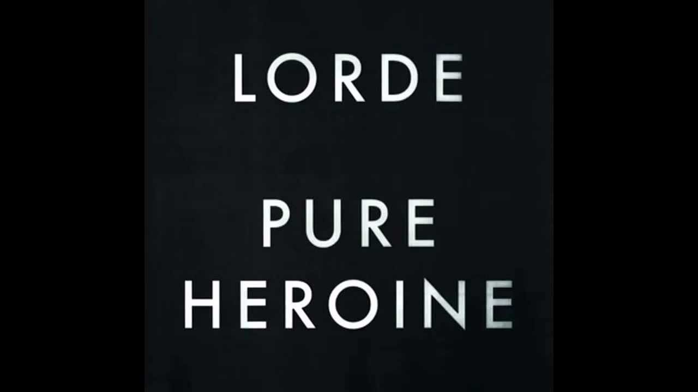

Melodrama by Lorde
June 4, 2018 I adore this album. When I first listened to it in June 2017, I remember thinking that I'd been living this album for the past six months without even realizing it. Every song felt so familiar to me that I couldn't pick a favorite for months. But now I can say that my favorite song on Melodrama is Hard Feelings. There are not many things in this world that I adore more than that last verse:
Three years, loved you every single day, made me weak, it was real for meNow I'll fake it every single day til I don't need fantasy, til I feel you leave
But I still remember everything, how we'd drift buying groceries, how you'd dance for me
I'll start letting go of little things til I'm so far away from you, far away from you, yeah
Reputation by Taylor Swift
June 4, 2018 This album took a while to grow on me, but I think that I can safely say that it is now my favorite Taylor Swift album. That's perhaps less impressive than it might seem if you consider the fact that I haven't been an active fan of hers since the Fearless era. However, this album accomplished the difficult task of making me an avid T. Swift fan once again, just like back in the golden days of 2009.
I've been trying to put my finger on what about this album made it so different for me, and I think there are two main factors at play here. First, I adore Jack Antonoff and everything he does, and he is more present on this album than ever before in their collaborative history. Second, I think Taylor is far more honest and straightforward on this album than she has ever been before. It feels like she is less reliant on cliches and fairytales now -- she's simply telling it like it is and I love it. My favorite song is Call It What You Want, but I enjoy pretty much every track (except for End Game, which I cannot stand. Sorry Tay!).
Gone Now by Bleachers
June 4, 2018
MASSEDUCTION by St Vincent
June 4, 2018 St Vincent by St Vincent
June 4, 2018
Some Nights by fun.
June 4, 2018 I adore this album. I'm not the biggest fan of Nate Ruess as a person, but the guy knows how to write quality lyrics. The worst song on the album is clearly It Gets Better.
Aim and Ignite by fun.
June 4, 2018 Pure Heroine by Lorde
June 4, 2018 This feels like such a throwback. I remember getting this album as a Christmas present in 2013 and listening to it obsessively for the next year. It's one of the first albums I remember appreciating as a whole, rather than just a collection of songs.